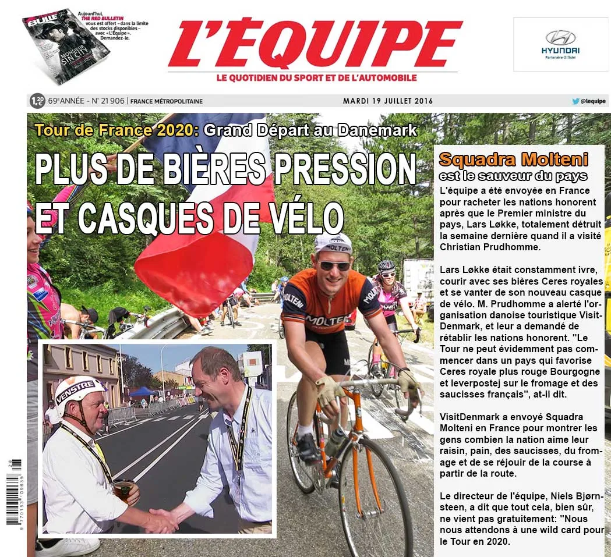
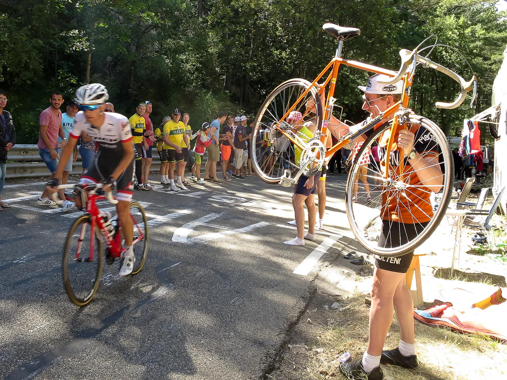
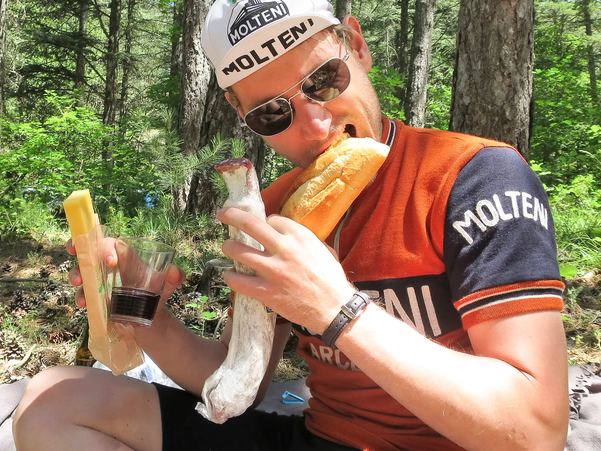
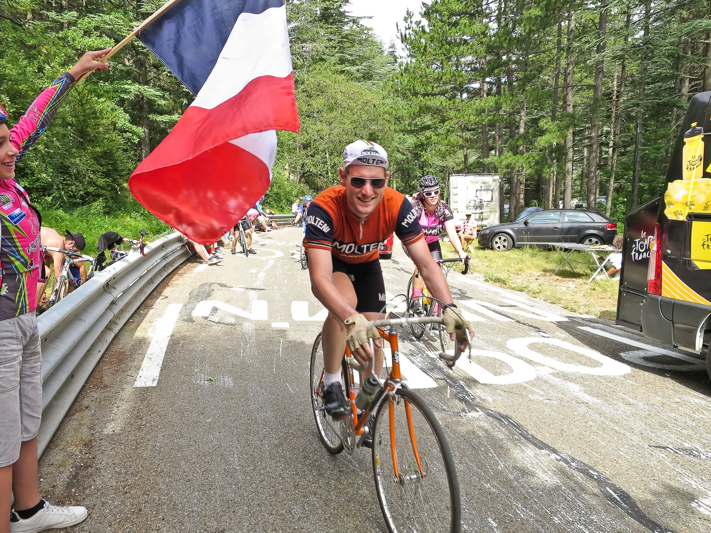

Squadra Molteni skal få Tour de France til Danmark

Det er hviledag, og traditionen tro er der skandalesager fra den franske avis L’ÉQUIPE. Nu skal Squadra Molteni redde nationens ære og få Tour De France til Danmark i 2020.
Squadra Molteni skal frelse landet Holdet er sendt til Frankrig for at genrejse nationens ære. Landets statsminister har fuldstændigt smadrede dén, og landets chancer for at være vært for Tour de France-starten i 2020, da han besøgte Tour-chefen Christian Prudhomme under årets Tour de France.

Grand Départ: Tour de France til Danmark i 2020.
Flere øjenvidner beretter om en konstant beruset Lars Løkke, der spankulerede rundt med sin Ceres Royal, og pralede af sin nye cykelhjelm.
Hr. Prudhomme har været nødsaget til at advare Danmarks Turistorganisation VistiDenmark, og bedt dem forsøge at rette op på sagerne.
– Tour’en kan naturligvis ikke starte i et land der favoriserer Ceres Royal over en rød Bourgogne og leverpostej over Franske oste og pølser, skrev han til organisationen.
VisitDenmark har sendt Squadra Molteni til Frankrig
VisitDenmark har sendt Squadra Molteni til det franske land for at vise befolkningen, og Tour-chefen, hvor meget nationen elsker deres umodne druer, billige brød, tørre oste og fedtede pølser.
Og, selvfølgelig, for at juble ved vejsiden når Touren kommer forbi.






Samt generelt bare at charme sig ind på Touren’s vigtige karakterer.
Holdets direktør, Niels Bjørnsteen, Ligger dog ikke skjul på, at en sådan charmeoffensiv ikke bare leveres gratis.
– Vi forventer selvfølgelig et wildcard til Touren i 2020, det er klart, siger han.